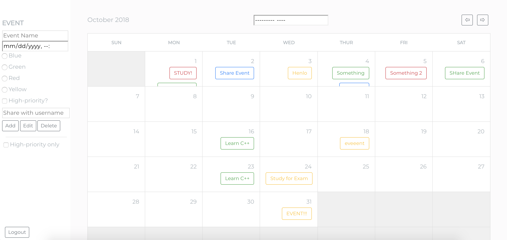

01 / Real-time connections
Development · 2018
Node.js Chatroom
Bringing people together, one room at a time. Real-time messaging built with Node.js and Socket.io.
Code, design & a curious mind
Thoughtful technology.
A little personality.
I care about intuitive experiences and the ways technology can make everyday life a little better.

left-handed. right at home.
01 / Selected work
A collection of code, experiments, and creative work from my project archive.
Development · 2018
Bringing people together, one room at a time. Real-time messaging built with Node.js and Socket.io.

Browser extension · 2018
A dictionary that keeps the words you discover. Built alongside students at Girls Who Code.

Visual design
Logos, presentation decks, posters, and a little visual storytelling.

Web application · 2018
A place to plan, share events, and keep track of what matters. No page refresh needed.
Algorithms · 2018
Exploring minimax game theory to turn a twelve-move puzzle into a much smarter guess.
Research & writing · PDF
A look at important moments in the legacy of the Turing Test, and the questions they leave behind.
One more from the archive: PHP file sharing
02 / The person behind the pixels
I’m interested in the space where technology, design, and everyday life meet.
I care about intuitive user experiences, technology as a means to improve society, and the small design decisions that make something feel natural to use.
My earlier chapters include studying computer science at Brown, serving as Webmaster for the Women in Computer Science Club, and supporting other students as a teaching assistant and engineering tutor.
Beyond the keyboard: tennis, frisbee, dark chocolate, and finding an excuse to mention that I’m left-handed.
03 / Earlier chapters
Education and early experience from the original portfolio. For my latest background, visit LinkedIn (opens in a new tab).
Summer 2019
Software Engineering Intern
Built an application-onboarding backend for data monitoring services, accelerating team data transfers and reducing manual onboarding work.
Summer 2018
Teaching Assistant
Helped a classroom of 40 high school students explore Python, robotics, web development, and data science — and bring their final projects to life.
Education
Computer Science
A foundation in computer science, with a curiosity for how people experience the things we build.
From the toolbox
Java · Python · C++ · JavaScript · HTML & CSS · PHP · Node.js · Git